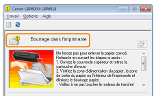
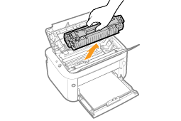
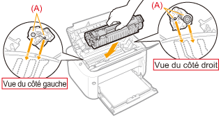

|
Avant de supprimer le bourrage papier, reportez-vous à "Attention (Bourrages papier)".
|
En cas de bourrage papier, un message s'affiche dans la fenêtre d'état de l'imprimante.

 Si la fenêtre d'état de l'imprimante ne s'affiche pas Si la fenêtre d'état de l'imprimante ne s'affiche pas |
 "
"Procédure de suppression d'un bourrage papier
Veillez à appliquer la procédure suivante pour retirer le papier coincé.
1
En maintenant le dispositif d'ouverture (A) à droite, ouvrez le couvercle supérieur.
 |
Ne tirez pas trop fort sur le papier coincé, même si vous pouvez le voir mais ne parvenez pas à le retirer en suivant la procédure décrite.
|

2
Retirez la cartouche d'encre.
Placez immédiatement la cartouche dans le sac de protection d'origine ou enveloppez-la dans un chiffon épais.
|
|
Pour en savoir plus sur la manipulation de la cartouche d'encre, reportez-vous à "Attention (Cartouche d'encre)".
|

3
Retirez le bourrage papier.
Si le papier est coincé dans la zone de sortie ou à l'intérieur de l'imprimante
|
(1)
|
Saisissez le papier par les deux extrémités, puis tirez-le doucement vers l'extérieur.
|
|
(2)
|
Retirez le papier en tirant doucement dessus.
|

Si le papier est coincé dans l'alimentation papier
Retirez le papier en tirant doucement dessus.

4
Installez la cartouche d'encre.
Poussez fermement la cartouche d'encre dans l'imprimante jusqu'à ce qu'elle touche le fond de l'appareil, tout en alignant l'ergot (A) des deux côtés de la cartouche sur les guides de cartouche situés dans l'imprimante.

5
Fermez le couvercle supérieur.
|
→
|
Le message signalant un bourrage papier disparaît et l'imprimante est prête à imprimer.
|
|
Si vous ne parvenez pas à refermer le couvercle supérieur Vérifiez que la cartouche d'encre est correctement installée dans l'imprimante. N'essayez pas de refermer le couvercle supérieur en forçant, car cela peut endommager l'imprimante.
|